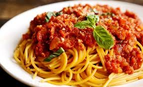

Spagetti

Készítsünk elő egy nagy fazekat, amibe a tésztát főzzük majd ki. Töltsük 3/4-ig vízzel, majd ízesítsük pár csipet sóval. Amikor elkezd forrni a víz, rakjuk bele a tésztát, és egy pici olajat, hogy ne ragadjon a tészta (egészben is lehet, de akkor amikor puhul, folyamatosan nyomjuk bele a vízbe, én ketté szoktam törni). Néha keverjük meg, és 5 percenként kóstoljunk meg egyet, hogy elég puha-e (ezt is ízlés szerint főzzük ki, valaki félkeményen szereti, valaki extra puhán). Ha megfőtt a tészta, akkor vegyük elő a tésztaszűrőt, és szűrjük le, majd ugyanabba a lábasba tegyük vissza, és adjunk hozzá még egy pici olajat (1-2 ek), majd picit forgassuk meg az olajban. Vágjuk fel a hagymát finomra, és tegyük egy kisebb fazékba, pirítsuk üvegesre egy kis olajon. Ha a hagyma megpirult, adjuk hozzá a húst is, és nyomkodjuk szét, hogy ne egyben legyen. A húshoz adjuk hozzá a fűszereket, ízlés szerint (kb. 2 nagy csipet só, nagyon pici feketebors vagy fehér, egy kis tenyérnyi oregánó és egy még kisebb tenyérnyi majoránna). Ezután hozzáadhatjuk a fokhagymakrémet, vagy az apróra felvágott/préselt fokhagyma gerezdeket. Jól forgassuk át a fazékban, majd ha a hús szinte fehér lett, és úgy érezzük, hogy már jó, akkor adjuk hozzá a paradicsomsűrítményt vagy a bazsalikomos paradicsomszószt (az üvegben maradt paradicsommaradékot egy pici vízzel szoktam felhígítani, lezárni, összerázni és a fazékba beleönteni). Ezt is jól forgassuk át, majd tegyünk rá egy fedőt. Kb. 3-5 percenként nézzük meg, és alaposan kevergessük át. Reszelt sajttal tálaljuk (ajánlom még melegen ráreszelni, mert akkor ráolvad, és szerintem guszta).